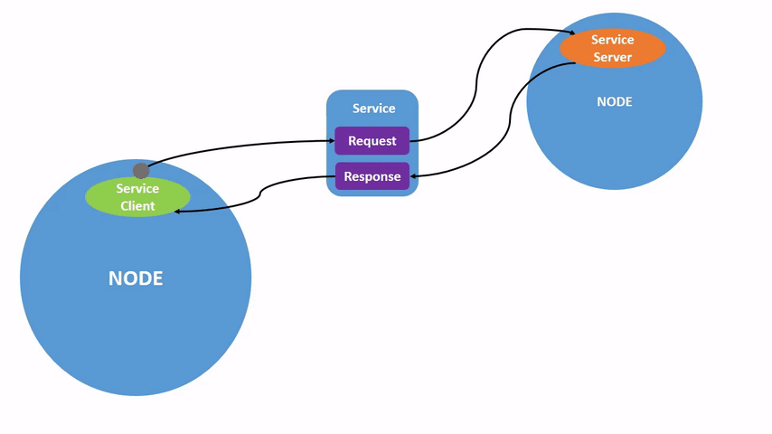

<!DOCTYPE lake>
<h1 data-lake-id="IburE" id="IburE"><span data-lake-id="u1142e35c" id="u1142e35c">service简介 </span></h1><p data-lake-id="u2a8e3c41" id="u2a8e3c41"><span class="lake-fontsize-12" data-lake-id="u472a6824" id="u472a6824" style="color: rgb(51, 51, 51)">service是 ROS 图中节点的另一种通信方式。服务基于调用和响应模型，而不是topic的发布者-订阅者模型。虽然topic允许节点订阅数据流并获得持续更新，但service仅在客户端专门调用它们时才提供数据。</span></p><p data-lake-id="ue636b6a3" id="ue636b6a3"></p><p data-lake-id="udfefebaf" id="udfefebaf"></p><h1 data-lake-id="Jog1G" id="Jog1G"><span data-lake-id="ue172c7a8" id="ue172c7a8" style="color: rgb(51, 51, 51)">service任务</span></h1><h2 data-lake-id="ywUiI" data-lake-index-type="2" id="ywUiI"><span data-lake-id="u9aa131f1" id="u9aa131f1" style="color: rgb(51, 51, 51)">打开2个节点</span></h2><span class="yuque-card-unsupported">[codeblock]</span><h2 data-lake-id="aOcJ8" data-lake-index-type="2" id="aOcJ8"><span data-lake-id="u10ce7e00" id="u10ce7e00" style="color: rgb(51, 51, 51)">service列表</span></h2><p data-lake-id="u1b451590" id="u1b451590"><span class="lake-fontsize-12" data-lake-id="u9bdd068e" id="u9bdd068e" style="color: rgb(51, 51, 51)">在新终端中运行该命令将返回系统中当前处于活动状态的所有服务的列表：</span></p><span class="yuque-card-unsupported">[codeblock]</span><h2 data-lake-id="I0LIE" data-lake-index-type="2" id="I0LIE"><span data-lake-id="ud033a804" id="ud033a804" style="color: rgb(51, 51, 51)">service的类型</span></h2><p data-lake-id="u4afac0d8" id="u4afac0d8"><span class="lake-fontsize-12" data-lake-id="uf9e08d0e" id="uf9e08d0e" style="color: rgb(51, 51, 51)">服务具有描述服务的请求和响应数据的结构的类型。服务类型的定义类似于主题类型，除了服务类型有两部分：一个消息用于请求，另一个用于响应。</span></p><p data-lake-id="ue5514c16" id="ue5514c16"><span class="lake-fontsize-12" data-lake-id="uaf52df38" id="uaf52df38" style="color: rgb(51, 51, 51)">要找出服务的类型，请使用以下命令：</span></p><span class="yuque-card-unsupported">[codeblock]</span><h2 data-lake-id="RNSjz" data-lake-index-type="2" id="RNSjz"><span data-lake-id="ua6a2c628" id="ua6a2c628" style="color: rgb(51, 51, 51)">带类型的service列表</span></h2><span class="yuque-card-unsupported">[codeblock]</span><h2 data-lake-id="rRrBa" data-lake-index-type="2" id="rRrBa"><span data-lake-id="u28946297" id="u28946297" style="color: rgb(51, 51, 51)">查看特定类型的服务</span></h2><span class="yuque-card-unsupported">[codeblock]</span><h2 data-lake-id="LRwAq" data-lake-index-type="2" id="LRwAq"><span data-lake-id="u7926c0e6" id="u7926c0e6" style="color: rgb(51, 51, 51)">查看服务类型的数据结构</span></h2><span class="yuque-card-unsupported">[codeblock]</span><h2 data-lake-id="OJJyH" data-lake-index-type="2" id="OJJyH"><span data-lake-id="uf0bd3af3" id="uf0bd3af3" style="color: rgb(51, 51, 51)">调用service</span></h2><span class="yuque-card-unsupported">[codeblock]</span><p data-lake-id="uddedc674" id="uddedc674"><span class="lake-fontsize-12" data-lake-id="u2dbeef39" id="u2dbeef39" style="color: rgb(119, 119, 119)">该</span><span class="lake-fontsize-12" data-lake-id="ueda56b31" id="ueda56b31" style="color: rgb(119, 119, 119); background-color: rgb(243, 244, 244)">&lt;arguments&gt;</span><span class="lake-fontsize-12" data-lake-id="u183ae109" id="u183ae109" style="color: rgb(119, 119, 119)">部分是可选的。例如，</span><span class="lake-fontsize-12" data-lake-id="ub7589453" id="ub7589453" style="color: rgb(119, 119, 119); background-color: rgb(243, 244, 244)">Empty</span><span class="lake-fontsize-12" data-lake-id="u44dbb7c3" id="u44dbb7c3" style="color: rgb(119, 119, 119)">类型化服务没有任何参数</span></p><span class="yuque-card-unsupported">[codeblock]</span><p data-lake-id="ud6866378" id="ud6866378"><span class="lake-fontsize-12" data-lake-id="ua94d8f05" id="ua94d8f05">清楚小乌龟轨迹</span></p><span class="yuque-card-unsupported">[codeblock]</span><h2 data-lake-id="HNoh7" data-lake-index-type="2" id="HNoh7"><span data-lake-id="u8f9e7fae" id="u8f9e7fae">查看ros已经定义好的数据类型</span></h2><span class="yuque-card-unsupported">[codeblock]</span><p data-lake-id="u242b63c9" id="u242b63c9"><br/></p><p data-lake-id="u1d888278" id="u1d888278"><br/></p><h1 data-lake-id="mwGsl" id="mwGsl"><span data-lake-id="u75fdef27" id="u75fdef27">练习</span></h1><h2 data-lake-id="L5i62" id="L5i62"><span data-lake-id="uf08ad87c" id="uf08ad87c" style="color: rgb(51, 51, 51)">小乌龟功能列表</span></h2><p data-lake-id="ub033a6c0" id="ub033a6c0"><span class="lake-fontsize-12" data-lake-id="u6b83882f" id="u6b83882f" style="color: rgb(51, 51, 51)">可以使用 ros2 service 命令查询当前小乌龟的功能</span></p><span class="yuque-card-unsupported">[codeblock]</span><h2 data-lake-id="gNP4i" id="gNP4i"><span data-lake-id="u332c5802" id="u332c5802" style="color: rgb(51, 51, 51)">清除功能</span></h2><span class="yuque-card-unsupported">[codeblock]</span><p data-lake-id="u1b7ac98f" id="u1b7ac98f"><span class="lake-fontsize-12" data-lake-id="u3d432772" id="u3d432772" style="color: rgb(51, 51, 51)">可以清理小乌龟走过的线路</span></p><h2 data-lake-id="mpTPM" id="mpTPM"><span data-lake-id="u5b8de89b" id="u5b8de89b" style="color: rgb(51, 51, 51)">杀死小乌龟</span></h2><span class="yuque-card-unsupported">[codeblock]</span><p data-lake-id="ud297a807" id="ud297a807"><span class="lake-fontsize-12" data-lake-id="u02c04ebc" id="u02c04ebc" style="color: rgb(119, 119, 119)">小乌龟默认名称为</span><span class="lake-fontsize-12" data-lake-id="ud5c1406d" id="ud5c1406d" style="color: rgb(119, 119, 119); background-color: rgb(243, 244, 244)">turtle1</span></p><h2 data-lake-id="ByAYc" id="ByAYc"><span data-lake-id="u87b26a58" id="u87b26a58" style="color: rgb(51, 51, 51)">重置小乌龟</span></h2><span class="yuque-card-unsupported">[codeblock]</span><p data-lake-id="u3a952f5d" id="u3a952f5d"><span class="lake-fontsize-12" data-lake-id="ua8e3a41e" id="ua8e3a41e" style="color: rgb(119, 119, 119)">可以让整个界面进入初始化状态</span></p><h2 data-lake-id="Xf28T" id="Xf28T"><span data-lake-id="u30060be3" id="u30060be3" style="color: rgb(51, 51, 51)">创建小乌龟</span></h2><span class="yuque-card-unsupported">[codeblock]</span><p data-lake-id="u74742734" id="u74742734"><span class="lake-fontsize-12" data-lake-id="u437de774" id="u437de774" style="color: rgb(51, 51, 51)">通过设置</span><span class="lake-fontsize-12" data-lake-id="ubb233842" id="ubb233842" style="color: rgb(51, 51, 51); background-color: rgb(243, 244, 244)">x</span><span class="lake-fontsize-12" data-lake-id="ue52abd62" id="ue52abd62" style="color: rgb(51, 51, 51)">,</span><span class="lake-fontsize-12" data-lake-id="u6fdcda79" id="u6fdcda79" style="color: rgb(51, 51, 51); background-color: rgb(243, 244, 244)">y</span><span class="lake-fontsize-12" data-lake-id="ub1ca6b46" id="ub1ca6b46" style="color: rgb(51, 51, 51)">来设置新乌龟的位置。通过设置</span><span class="lake-fontsize-12" data-lake-id="u7fb8ee01" id="u7fb8ee01" style="color: rgb(51, 51, 51); background-color: rgb(243, 244, 244)">theta</span><span class="lake-fontsize-12" data-lake-id="ud74f854a" id="ud74f854a" style="color: rgb(51, 51, 51)">来设置小乌龟头的朝向。通过设置</span><span class="lake-fontsize-12" data-lake-id="u72814059" id="u72814059" style="color: rgb(51, 51, 51); background-color: rgb(243, 244, 244)">name</span><span class="lake-fontsize-12" data-lake-id="u56b2c5a3" id="u56b2c5a3" style="color: rgb(51, 51, 51)">来设置小乌龟的名称</span></p><h2 data-lake-id="QfehU" id="QfehU"><span data-lake-id="u751d61e6" id="u751d61e6" style="color: rgb(51, 51, 51)">设置画笔</span></h2><span class="yuque-card-unsupported">[codeblock]</span><blockquote data-lake-id="uc39295d3" id="uc39295d3"><p data-lake-id="ud30ab2f1" id="ud30ab2f1"><span class="lake-fontsize-12" data-lake-id="u33693b09" id="u33693b09">r,g,b控制画笔的颜色值。取值范围为0-255.</span></p><p data-lake-id="u33cef960" id="u33cef960"><span class="lake-fontsize-12" data-lake-id="u7ea96237" id="u7ea96237">with控制的是画笔的粗细。</span></p><p data-lake-id="uba1d2e63" id="uba1d2e63"><span class="lake-fontsize-12" data-lake-id="u87747363" id="u87747363">off表示是否使用画笔，0代表是使用，1为不使用。</span></p></blockquote><h2 data-lake-id="jocxd" id="jocxd"><span data-lake-id="u4269cecd" id="u4269cecd" style="color: rgb(51, 51, 51)">设置绝对位置</span></h2><span class="yuque-card-unsupported">[codeblock]</span><p data-lake-id="ub9182188" id="ub9182188"><span class="lake-fontsize-12" data-lake-id="u4c931a6b" id="u4c931a6b" style="color: rgb(119, 119, 119)">通过设置</span><span class="lake-fontsize-12" data-lake-id="u72513d3f" id="u72513d3f" style="color: rgb(119, 119, 119); background-color: rgb(243, 244, 244)">x</span><span class="lake-fontsize-12" data-lake-id="u70ee9e9f" id="u70ee9e9f" style="color: rgb(119, 119, 119)">,</span><span class="lake-fontsize-12" data-lake-id="u9129f550" id="u9129f550" style="color: rgb(119, 119, 119); background-color: rgb(243, 244, 244)">y</span><span class="lake-fontsize-12" data-lake-id="uf28b1cac" id="uf28b1cac" style="color: rgb(119, 119, 119)">来设置新乌龟的位置。通过设置</span><span class="lake-fontsize-12" data-lake-id="u8fdde82e" id="u8fdde82e" style="color: rgb(119, 119, 119); background-color: rgb(243, 244, 244)">theta</span><span class="lake-fontsize-12" data-lake-id="u312ac7ed" id="u312ac7ed" style="color: rgb(119, 119, 119)">来设置小乌龟头的朝向</span></p><h2 data-lake-id="wOUic" id="wOUic"><span data-lake-id="u66a69e4c" id="u66a69e4c" style="color: rgb(51, 51, 51)">设置相对位置</span></h2><span class="yuque-card-unsupported">[codeblock]</span><blockquote data-lake-id="u79aa7699" id="u79aa7699"><p data-lake-id="ub21630d3" id="ub21630d3"><code data-lake-id="uc8dd5e1a" id="uc8dd5e1a"><span class="lake-fontsize-12" data-lake-id="ue8a40aa1" id="ue8a40aa1">linear</span></code><span class="lake-fontsize-12" data-lake-id="u35749bec" id="u35749bec">负责线速度</span></p><p data-lake-id="u99128e01" id="u99128e01"><code data-lake-id="uec0efda1" id="uec0efda1"><span class="lake-fontsize-12" data-lake-id="ud9999a84" id="ud9999a84">angular</span></code><span class="lake-fontsize-12" data-lake-id="ubaecffbb" id="ubaecffbb">复杂角速度</span></p><p data-lake-id="u3b6d1d75" id="u3b6d1d75"><span class="lake-fontsize-12" data-lake-id="u0025baed" id="u0025baed">按照单位为1s的时间运行</span></p><p data-lake-id="ue7fb6142" id="ue7fb6142"><span class="lake-fontsize-12" data-lake-id="uda94a5b4" id="uda94a5b4">直接显示在1s后的位置上</span></p></blockquote>